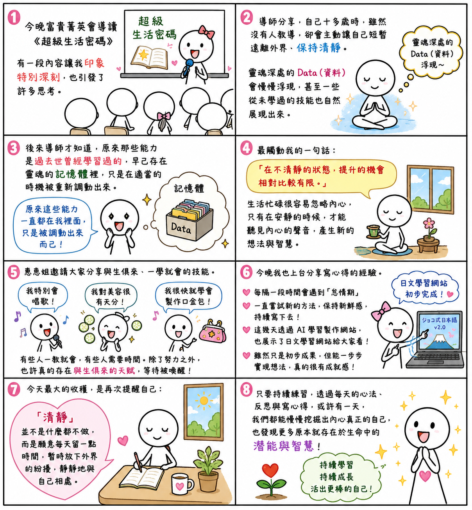

日期：2026/07/01

今晚富貴菁英會導讀《超級生活密碼》時，有一段內容讓我印象特別深刻，也引發了許多思考。
導師分享，自己十多歲時，雖然沒有人教導，卻會主動讓自己短暫遠離外界、保持清靜。就在這樣的狀態下，靈魂深處的 Data（資料）會慢慢浮現，甚至一些從未學過的技能也自然展現出來。後來導師才知道，原來那些能力是過去世曾經學習過的，因此早已存在靈魂的記憶體裡，只是在適當的時機被重新調動出來。
其中最觸動我的一句話是：「在不清靜的狀態，提升的機會相對比較有限。」
我覺得真的很有道理。現代人的生活總是忙忙碌碌，如果每天都被各種訊息、工作和雜事填滿，很容易忽略自己的內心，更難有機會靜下來反思自己。反而是在安靜的時候，才能慢慢感受到內心真正的聲音，也更容易產生新的想法與智慧。
惠惠姐也邀請大家分享，自己有沒有什麼技能，感覺像是與生俱來、一學就會。有同學說自己特別會唱歌，有人對美容很有天分，惠惠姐則分享自己很快就學會製作口金包。聽著大家的分享，我也開始思考，有些人真的一教就會，有些人卻需要花很多時間才能學會。除了努力之外，也許真的存在某些與生俱來的天賦，等待在適當的時機被喚醒。
今晚我也上台分享了自己寫心得的經驗。我提到，每隔一段時間都會遇到「怠惰期」，所以我一直在嘗試新的方法，讓自己保持新鮮感，持續寫下去。這幾天更透過 AI 學習製作網站，也把目前完成的日文學習網站展示給大家看。雖然還只是初步成果，但能把原本腦中的想法一步步實現，真的讓我充滿成就感，也更期待未來持續完成它。
今天最大的收穫，是再次提醒自己：「清靜」並不是什麼都不做，而是願意每天留一点時間，暫時放下外界的紛擾，靜靜地與自己相處。
我想，只要持續練習，透過每天的心法、反思與寫心得，或許有一天，我們都能慢慢挖掘出內心真正的自己，也發現更多原本就存在於生命中的潛能與智慧。